건축기사 (2003-03-16 기출문제)
1과목: 건축계획
1. 아파트의 입체형식 중 복층형에 대한 설명 중 적당하지 않은 것은?
- 엘리베이터의 정지층수를 적게 할 수 있다.
- 복도가 없는 층은 통풍 및 채광이 나쁘다.
- 통로면적을 감소하고 임대면적을 증가시킬 수 있다.
- 소규모 주택에는 면적면에서 불리하다.
(정답률: 56%)

2. 회중석의 수용인원이 1,000명 이상인 경우의 교회 평면 그림에서 좌석중심각 A와 가청거리 B의 값으로 가장 적합한 것은?
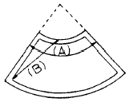
- A:110° ‾120° , B:23m이내
- A:110° ‾120° , B:25m이내
- A:80° ‾90° , B:25m이내
- A:80° ‾90° , B:23m이내
(정답률: 26%)
3. 호텔건축의 기능적 분류는 세 부분으로 나누어지며, 이들은 공간적으로 분명한 조닝체계에 의하여 계획되어야 한다. 다음중 호텔건축의 기능적 분류의 세 부분에 속하지 않는 것은?
- 관리부분
- 공공부분
- 숙박부분
- 설비부분
(정답률: 60%)
4. 오피스 랜드스케이핑(office landscaping)에 관한 기술로써 옳지 못한 것은?
- 개인적 공간으로의 분할로 독립성 확보가 쉽다.
- 이 계획방법으로 의사전달, 작업흐름의 연결이 용이하다.
- 공간의 가변성을 필요에 의해 기대할 수 있다.
- 작업단위에 의한 그룹(Group)배치가 가능하다.
(정답률: 77%)
5. 주심포계 건축양식의 일반적인 설명 중 틀린 것은?
- 기둥위 주두위에만 공포를 둔다.
- 출목은 2출목이하이고 대부분 연등천정이다.
- 창방위에 평방을 받아 구조적 안정을 가진다.
- 대표적인 건물로는 봉정사 극락전, 관음사 원통전이 있다.
(정답률: 44%)
6. 사무소건축의 기준층 평면형태 결정요소에 대한 설명 중 가장 부적절한 것은?
- 구조상 스팬의 한도
- 방화구획상 면적
- 덕트, 배선, 배관 등 설비 시스템상의 한계
- 대피상 최소 피난거리
(정답률: 46%)
7. 쇼핑센터의 공간구성요소인 몰(Mall)계획에 관한 설명중 틀린 것은?
- 몰은 쇼핑센터내의 주요 보행동선으로 쇼핑거리인 동시에 고객의 휴식공간이다.
- 몰에는 층외로 개방된 Open Mall과 닫혀진 실내공간으로 된 Enclosed Mall이 있다.
- 몰에는 코트(court)를 설치해 각종 연회, 이벤트 행사 등을 유치하기도 한다.
- 몰의 활성화를 위해 전문점들과 중심상점의 주출입구는 몰과 면하지 않도록 거리를 두어야 한다.
(정답률: 78%)
8. 공장 건축계획에 관한 기술로 옳지 않은 것은?
- 공장부지 선정은 노동력의 공급이 쉽고, 원료의 공급이 용이한 곳에 정한다.
- 공장건축의 형식에서 집중식(Block Type)은 건축비가 저렴하고, 공간효율도 좋다.
- 공정중심의 레이아웃은 소종다량생산(小種多量生産)이나 표준화가 쉬운 경우에 적합하다.
- 공장 작업장의 지붕형식으로 균일한 조도를 얻기 위해 톱날지붕을 도입하는 경우가 있다.
(정답률: 50%)
9. 아파트의 동 계획에서 지상층에 피로티를 두는 이유에 대한 다음의 설명 중 적절하지 않은 것은?
- 개방감의 확보
- 원할한 보행 동선의 연결
- 휴식 공간 등 주민 편의 시설의 확보
- 용적률의 감축 및 공사비 절감
(정답률: 59%)
10. 건축 모듈(Module)에 대한 기술 중에서 가장 잘못된 것은 어느 것인가?
- 양산의 목적과 공업화를 위해 쓰여진다.
- 모든 치수의 수직과 수평이 황금비를 이루도록 하는 것이다.
- 복합 모듈은 기본 모듈의 배수로서 정한다.
- 모든 모듈은 인간척도에 맞추어 채택된다.
(정답률: 50%)
11. 교통 및 상업의 중심지인 도시에 위치하여 일반관광객 외에 상업, 사무 등 각종 비즈니스를 위한 여행자를 대상으로 하며, 일반적으로 호텔 경영내용의 주체를 식사료에 비중을 두고 있는 것은?
- 커머셜 호텔(commercial hotel)
- 레지덴셜 호텔(residential hotel)
- 아파트먼트 호텔(apartment hotel)
- 터미널 호텔(terminal hotel)
(정답률: 35%)
12. 음향설계적 측면을 고려한 관객석 계획 중 틀린 항목은?
- 미국의 누드슨(Knudsen)과 해리스(Harris)에 의하면, 2000석의 수용인원을 갖는 극장에 1객석당 4.95m3의 용적이 필요하다.
- 객석의 형이 원형일 경우 확산작용을 하도록 계획하면 음향조건이 크게 개선된다.
- 발코니 하부의 깊이를 개구부 높이의 2배 이상으로 하여 음을 흡수하도록 한다
- 천장이나 벽은 무대에서 멀리 떨어진 객석에 적당한 반사음을 보내는 역할을 하여야 한다.
(정답률: 40%)
13. 미술관의 주체는 전시실의 순회형식이다. 다음중 부지의 이용률이 높은 지점에 건립할 수 있으나, 장래의 확장에 많은 무리를 가지고 있는 전시실 순회형식은?
- 갤러리 및 코리더(복도)형식
- 연속순로 형식
- 중앙홀 형식
- 실 연속 순회형식
(정답률: 68%)
14. 생산업체의 기술자가 최신의 기술자료를 얻으려 한다면 다음 중 어느 부류의 도서관을 이용하는 것이 가장 효과적인가?
- 공공도서관
- 대학도서관
- 국회도서관
- 전문도서관
(정답률: 72%)
15. 은행건축계획에 관한 사항중에서 가장 적당한 것은?
- 은행실을 구성하는 고객용 로비와 영업실의 면적비는 1(고객용 로비):0.8‾1.5(영업실)이다.
- 주출입구는 보온을 위해 방풍실을 두는 것이 좋으며 출입문은 바깥 여닫이문으로 함이 타당하다.
- 영업실은 인공조명의 균일화된 조도로 업무능률의 향상을 목표로 하고 있기 때문에 외벽에 큰 창을 만들지 않는다.
- 임대금고는 일반적으로 일반금고실과 같이 고객의 출입을 제한할 수 있는 위치에 설치한다.
(정답률: 29%)
16. 주택의 평면계획에 관한 사항 중 틀린 것은?
- 거실은 평면계획상 통로나 홀로서 사용하는 것이 좋다.
- 노인침실은 일조가 충분하고 전망이 좋은 조용한 곳에 면하게 하고 식당, 욕실 등에 근접시킨다.
- 부엌은 사용시간이 길므로 동남 또는 남쪽에 배치해도 좋다.
- 현관의 위치는 대지의 형태, 도로와의 관계에 의하여 결정된다.
(정답률: 49%)
17. 다음 중 건축양식의 발달순서가 옳게 된 것은?
- 초기 그리스도교 - 비잔틴 - 로마네스크 - 로코코 - 르네상스
- 로마 - 비잔틴 - 고딕 - 로마네스크 - 르네상스 - 바로크
- 그리스 - 로마네스크 - 르네상스 - 바로크 - 로코코
- 이집트 - 비잔틴 - 로마네스크 - 르네상스 - 고딕
(정답률: 53%)
18. 학교건축의 배치계획 중 분산병렬형 배치계획에 대한 설명으로 부적당한 것은?
- 일조· 통풍등 교실의 환경조건이 균등하다.
- 놀이터와 정원이 생긴다.
- 부지를 최대한 효율적으로 사용할 수 있다.
- 구조계획이 간단하고 시공이 용이하다.
(정답률: 48%)
19. 근린생활권의 주택지의 단위로서 초등학교를 중심으로 한 단위이며 어린이 공원, 운동장, 우체국, 소방서, 동사무소등이 설립되는 것은 어느 것인가?
- 인보구
- 근린분구
- 근린주구
- 커뮤니티
(정답률: 67%)
20. 리조트 호텔의 입지조건 중 비교적 관계가 먼 것은?
- 수량이 풍부하고 수질이 좋을 것
- 조망 및 주변 경관조건 양호
- 자동차 교통의 접근 양호
- 수해 및 풍설해의 위험이 없을 것
(정답률: 50%)
2과목: 건축시공
21. 철골공사에 관한 사항 중 옳지 않은 것은?
- 볼트접합부는 부식하기 쉬우므로 방청도장을 하여야한다.
- 볼트죄기에는 임팩트렌치, 토크렌치 등을 사용한다.
- 철골은 화재에 의한 강성저하가 심하므로, 반드시 내화피복을 하여야 한다.
- 용접 후, 용접부의 안전성을 확인하기 위한 비파괴검사에는 침투탐상, 초음파 탐상법 등이 있다.
(정답률: 42%)
22. 철골재의 수량산출에서 도면 정미수량에 가산할 할증율로 서 부적당한 것은?
- 경량형강 : 10%
- 강판 : 10%
- 봉강 : 5%
- 각 파이프 : 5%
(정답률: 26%)
23. 철판과 철판이 겹치든가 맞닿는 부분이 각을 이루도록 용접하는 것은?
- 맞댐용접
- 모살용접
- 용입용접
- 다층용접
(정답률: 50%)
24. 목재접착에 이용되는 접착제로서 내수, 내구성적인 측면에서 품질이 가장 우수한 것은?
- 요소계수지
- 페놀계수지
- 비닐계수지
- 아교
(정답률: 34%)
25. 분할도급의 종류에 대한 설명 중 옳지 않은 것은?
- 전문공종별분할도급은 기업주와 시공자와의 의사소통이 잘 되나 공사 전체관리가 곤란하다.
- 공정별 분할도급은 정지,구체, 마무리 공사등 과정별로 나누어 도급을 주는 방식이다.
- 공구별 분할도급은 설계완료분만 발주하거나 예산배 정상 구분될 때 편리하다.
- 직종별, 공종별 분할도급은 직영제도에 가까운 것으로서 총괄도급의 하도급에 많이 적용된다.
(정답률: 34%)
26. 건축공사의 공사원가 계산방법으로 옳지 않은 것은?
- 재료비 = 재료량 × 단위당 가격
- 경비 = 소요(소비)량 × 단위당 가격
- 이윤 = 공사원가 × 이윤율(%)
- 일반관리비 = 공사원가 × 일반관리비율(%)
(정답률: 36%)
27. CIC(Computer integrated Construction)의 설명으로 옳은 것은?
- 컴퓨터, 정보통신 및 자동화 생산, 조립기술 등을 토대로 건설행위를 수행하는데 필요한 기능들과 인력들을 유기적으로 연계하여 각 건설업체의 업무를 각사의 특성에 맞게 최적화 하는 것
- 재무, 인사관리 등의 요소들을 대상으로 건설업체의 업무수행을 전산화 처리하여 업무를 신속하게 수행토록 하는 것
- 건축 시공시에 컴퓨터를 활용하여 시공량의 점검, 시공부위 확인 등을 수행토록 하는 것
- 컴퓨터를 활용하여 건설의 입찰 및 계약업무를 전산화 하여 업무를 신속하고, 정확하게 처리토록 하는 것
(정답률: 60%)
28. AE제에 대한 다음 설명 중 틀린 것은 어느 것인가?
- AE콘크리트로서의 유효 공기량은 2%이하의 범위가 좋다.
- 콘크리트의 조건이 일정할 경우 공기량 10%의 범위에서는 AE제 사용량이 증가함에 따라 공기량은 거의 직선적으로 증가한다.
- 일반적으로 플레인콘크리트에 골재 최대치수에 따라 적당한 양의 공기를 연행시키면 단위수량은 6-8% 정도 감소한다.
- 통상적으로 공기량 1%가 슬럼프에 미치는 효과는 콘크리트 단위수량의 3%에 상당하는 것으로 알려져 있다.
(정답률: 28%)
29. 다음 중 발주자에 의한 현장관리 제도라고 볼 수 없는 것은?
- 착공신고제도
- 공정관리
- 현장회의 운영
- 중간관리일
(정답률: 29%)
30. 고강도 콘크리트의 배합설계에 대한 설명 중 틀린것은?
- 물시멘트비는 55%이하로 한다.
- 공기연행제를 전혀 사용하지 않는다.
- 단위수량은 185kg/m3 이하로 한다.
- 슬럼프치는 15cm이하로 한다.
(정답률: 54%)
31. 직교하는 단부 보에 있어서 기둥이 없을때의 철근 정착 위치로 가장 적절한 것은 어느 것인가?
- 보와 보 상호간에 정착시킨다.
- 정착이 필요없다.
- 슬래브에 정착한다.
- 벽체에 정착한다.
(정답률: 36%)
32. 다음 중 지붕공사에 주로 사용하는 재료는?
- 천연 아스팔트
- 스트레이트 아스팔트
- 아스팔트 피치
- 블로운 아스팔트
(정답률: 38%)
33. 아래 도면에서 G1과 같은 보가 8개 있는 건물에서 보의 콘크리트량으로서 적당한 것은?
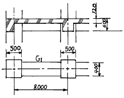
- 11.52m3
- 12.23m3
- 13.44m3
- 15.36m3
(정답률: 39%)
34. 콘크리트의 JOINT의 종류에 대해 나열한 것 중 계획된 JOINT가 아닌 것은?
- CONTROL JOINT
- CONSTRUCTION JOINT
- COLD JOINT
- EXPANSION JOINT
(정답률: 60%)
35. 철골용접작업중 운봉을 용접방향에 대하여 가로로 왔다갔다 움직여 용착금속을 녹여 붙이는 것의 용어로서 옳은 것은?
- 밀 스케일(mill scale)
- 글루우브(groove)
- 위이핑(weeping)
- 블로우 홀(blow hole)
(정답률: 50%)
36. 미장공법 중 균열이 가장 적게 생기는 것은?
- 소석고 플라스터 바름
- 경석고 플라스터 바름
- 마그네시아 시멘트 바름
- 백색 포틀랜드 시멘트 바름
(정답률: 30%)
37. 굳지않은 콘크리트의 작업성(Workability)에 영향을 미치는 요인에 대한 설명으로 옳은 것은?
- 단위수량의 증가와 워커빌리티의 향상은 비례적이다.
- 빈배합이 부배합보다 워커빌리티가 좋다.
- 깬자갈의 사용은 워커빌리티를 개선한다.
- AE제에 의해 연행된 공기포는 워커빌리티를 개선한다.
(정답률: 45%)
38. 콘크리트공사 중 거푸집 공사에 있어 거푸집의 존치기간에 대한 기술로서 틀린 것은?
- 바닥슬래브밑, 지붕슬래브밑 및 보밑의 거푸집판재는 원칙적으로 받침기둥을 해체한 후 떼어낸다.
- 기초, 보옆, 기둥 및 벽의 거푸집판재 존치기간은 콘크리트의 압축강도 50kgf/cm2 이상에 도달한 것이 확인될 때까지로 한다.
- 받침기둥의 존치기간은 슬래브밑, 보밑 모두 설계기준강도의 90%이상 콘크리트 압축강도가 얻어진 것이 확인될 때까지로 한다.
- 받침기둥을 해체할시 해체가능한 압축강도는 최저 120kgf/cm2이다.
(정답률: 19%)
39. 건축공사에서 언더피닝(Under Pinning) 공법의 설명으로 옳은 것은?
- 용수량이 많은 깊은기초 구축에 쓰이는 공법이다.
- 기존 건물의 기초 혹은 지정을 보강하는 공법이다.
- 터파기 공법의 일종이다.
- 일명 역구축 공법이라고도 한다.
(정답률: 48%)
40. 철골공사에서 크롬산 아연을 안료로 하고, 알키드 수지를 전색료로 한 것으로서 알루미늄 녹막이 초벌칠에 적당한 것은?
- 광명단
- 징크로메이트 도료
- 그래파이트 도료
- 알루미늄 도료
(정답률: 44%)
3과목: 건축구조
41. 그림과 같은 하중을 받는 보에서 B점의 반력값으로 옳은 것은?
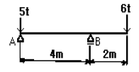
- 6 t
- 7.5 t
- 9.0 t
- 11 t
(정답률: 42%)
42. 그림과 같은 모멘트를 받을 때 정정보의 휨모멘트도로서 옳은 것은?
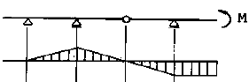
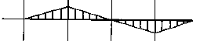
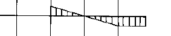
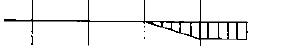
(정답률: 29%)
43. 철근콘크리트 단근보에서 fck=240kg/cm2,fy=3,000kg/cm2일때 강도설계법에 의한 균형철근비를 구한 값으로 맞는 것은?
- 0.039
- 0.043
- 0.046
- 0.049
(정답률: 21%)
44. 그림은 철근 콘크리트 보의 주근 배근이다. 주근의 이음 위치로 가장 나쁜 곳은?
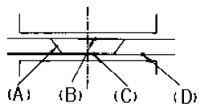
- (A)
- (B)
- (C)
- (D)
(정답률: 30%)
45. D22철근을 인장시켰을 때 늘어난 길이는 ? (단, E = 2.1 × 103 t/cm2, 1-D22 단면적은 3.87cm2)
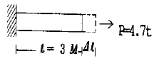
- 0.17 cm
- 0.24 cm
- 0.43 cm
- 0.51 cm
(정답률: 35%)
46. 그림과 같이 외력이 작용할 때 휨모멘트도는?
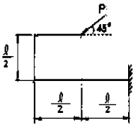
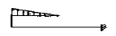
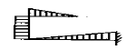
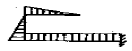
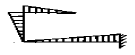
(정답률: 21%)
47. 철근콘크리트 보에서 하중때문에 그림과 같은 균열이 생겼다. 이 균열이 생기지 않게 하기 위해서 취하여야 할 가장 적당한 방법은?
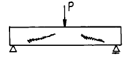
- 인장철근을 증가시킨다
- 압축철근을 증가시킨다
- 스터럽(stirrup)을 증가시킨다
- 인장 및 압축철근의 부착력을 증가시킨다
(정답률: 34%)
48. 리벳 접합에 관한 기술 중 옳지 않은 것은?
- 리벳의 허용내력은 리벳 직경에 대해 산정한다.
- 구조상 중요한 부재의 단부에 체결하는 리벳의 최소 개수는 3개 이상이다.
- 리벳접합부 판두께의 총합은 일반적으로 리벳 직경의 5배 이하로 한다.
- 모멘트를 받는 접합부에서 전단 리벳의 응력은 리벳군(群)의 중심으로부터의 거리에 비례한다.
(정답률: 27%)
49. 대린벽으로 구획된 10m 길이의 조적조 벽체에 최대한 허용 가능한 개구부 폭의 합계는?
- 4 m
- 5 m
- 6 m
- 7 m
(정답률: 30%)
50. 연약지반의 구조에 관한 대책 중 부적당한 것은?
- 건물을 경량화 한다.
- 기초에 마찰말뚝을 이용한다.
- 이웃건물과의 거리를 좁힌다.
- 지하실을 설치한다.
(정답률: 49%)
51. 그림과 같은 구조물에서 절점 B에 외력 M=20 t.m가 작용하는 경우 MAB는?
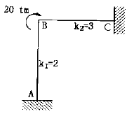
- 2 tm
- 4 tm
- 6 tm
- 8 tm
(정답률: 46%)
52. 휨모멘트 Mx = 6.0tonf· m, 축방향력 N=50tonf를 받는 부재의 단면을 H-250x125x10x19(Zx=587cm3, A=70.73cm2)로 설계했을때 H형강보에 생기는 최대 휨응력도의 값은?
- 1.73 tonf/cm2
- 1.80 tonf/cm2
- 1.83 tonf/cm2
- 1.90 tonf/cm2
(정답률: 23%)
53. 구조물의 응력계산에 관한 기술 중 틀린 것은?
- 트러스(Truss)는 주로 축방향응력으로 외력에 저항한다.
- 라멘(Rahmen)은 주로 휨모멘트와 전단응력으로 외력에 저항한다.
- 아취(Arch)는 주로 축방향응력과 전단응력으로 외력에 저항한다.
- 쉘(Shell)은 주로 면내응력으로 외력에 저항한다.
(정답률: 50%)
54. 신축건물의 기초파기 중 토질에 생기는 현상과 가장 관계가 적은 것은?
- 보일링(boiling)
- 히이빙(heaving)
- 파이핑(piping)
- 언더 피닝(under-pinning)
(정답률: 48%)
55. 그림과 같은 단근장방형보가 평형변형도 상태에 있다.강도설계법에 의거할 때 인장철근량으로 가장 옳은 것은 ? (단, fck=210kg/cm2, fy=3000kg/cm2, a=16.8cm)
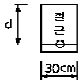
- 20cm2
- 25.7cm2
- 30cm2
- 35cm2
(정답률: 30%)
56. 강도설계법에서 보의 모멘트에 대해서 설계할 때 과소철 근비가 되도록 설계하는 이유로 적당한 것은?
- 철근의 인장력이 크기 때문에
- 철근의 배치가 쉽고 시공이 용이하므로
- 처짐을 감소시키기 위해서
- 압축콘크리트의 취성파괴를 막기 위해서
(정답률: 35%)
57. 철근콘크리트 슬래브에서 항복선 해석이론의 적용에 대한 가정 중 잘못된 것은?
- 파괴시 항복선의 철근은 완전히 항복한다.
- 파괴시 슬래브는 탄성변형을 하고 항복선을 따라 여러 조각으로 나뉘어진다.
- 2방향 슬래브의 경우 휨모멘트와 비틀림모멘트는 항복선을 따라 균등하게 분포한다.
- 탄성변형은 소성변형에 비해 무시할만하다.
(정답률: 12%)
58. 비틀림모멘트(torsional moment)에 대하여 주의해야 할 경우가 많은 부재는?
- 지중보
- 기둥
- 작은 보가 걸치는 외벽 선상의 큰 보
- 양교절 아아치
(정답률: 25%)
59. 조적조 벽체에 관한 사항 중 옳지 않은 것은?
- 내력벽의 길이는 10m를 넘을 수 없다.
- 내력벽으로 둘러싸인 부분의 바닥면적은 80m2를 넘을 수 없다.
- 하나의 층에 있어 개구부와 바로 위층의 개구부까지의 수직거리는 90cm 이상으로 해야 한다.
- 간막이벽의 두께는 9cm 이상으로 하여야 한다.
(정답률: 24%)
60. 단순보의 전단력도가 그림과 같을 때 보의 최대 휨모멘트는?
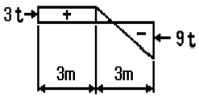
- 10.1 t· m
- 8.5 t· m
- 9.4 t· m
- 11.8 t· m
(정답률: 24%)
4과목: 건축설비
61. 물 10kg을 10 ℃에서 60 ℃로 가열하는데 필요한 열량은?
- 200 kcal
- 300 kcal
- 400 kcal
- 500 kcal
(정답률: 42%)
62. 조명 방식에 대한 설명 중 틀린 것은?
- 전반조명은 전체적으로 균일한 조도를 얻을 수 있다.
- 직접조명방식은 강한 음영이 생기지만 경제적이다.
- 간접조명방식은 조명능률이 떨어진다.
- 국부조명은 부분적으로 높은 조도를 얻을 수 있으므로 눈의 피로가 적다.
(정답률: 48%)
63. 공기조화설비 열원으로 빙축열 시스템을 채용하는 주된 목적은 다음 중 어느 것인가?
- 보다 찬 열원을 얻을 수 있어 실내가 쾌적해 진다.
- 얼음으로 축열하므로 설비점유 스페이스를 감소시킨다.
- 냉동기용량을 작게 하고 가동시간을 이동시켜 전력의 피크부하를 감소시킨다.
- 야간전력을 이용하여 공조에너지를 절약한다.
(정답률: 26%)
64. 연면적 1500m2인 사무소 건물에서 필요한 1일 급수량은 얼마인가 ? (단, 이 건물의 유효면적비율은 연면적의 50%, 유효면적당 인원 0.2인/m2, 1인 1일당 급수량은 100ℓ /c/d)
- 10m3
- 15m3
- 20m3
- 25m3
(정답률: 44%)
65. 피뢰침설비에 관한 설명으로 옳은 것은?
- 인하도선 사이의 간격은 50m 이하로 한다.
- 돌침은 건축물의 맨 윗부분으로부터 10cm 이상 돌출하여 설치한다.
- 피뢰도체 및 피뢰도선은 가연성 물질과는 5cm 이상 거리를 둔다.
- 돌침은 지름 5mm 이상인 알루미늄, 철 또는 강봉 등의 강도의 성능을 갖춘 것으로 한다.
(정답률: 15%)
66. 인간이 느끼는 열적 쾌적감을 객관적인 지표로 나타내기 위해 몇가지 단위가 쓰인다. 그중에서 clo라는 단위가 나타내는 의미는?
- 투습저항정도
- 옷의 단열정도
- 잠열에 의한 열손실정도
- 환기에 의한 열손실정도
(정답률: 57%)
67. 다음 중 급수관의 관경을 결정하는 방법이 아닌 것은?
- 기구 연결관의 관경에 의한 결정
- 균등표에 의한 관경 결정
- 마찰 저항 선도에 의한 관경 결정
- 배수부하 단위에 의한 결정
(정답률: 17%)
68. 전기설비의 설명 중 잘못된 것은?
- 고압이란 직류 600∼7,000V , 교류 750∼7,000V범위를 말한다.
- 버스닥트(bus duct)방식은 빌딩, 공장 등에 있어서 비교적 큰 전류의 저압 배전반 부근 및 간선에 이용된다.
- 3로 스위치란 3개의 단자를 구비한 전환용 스위치로서, 한 개의 전등을 2개소 위치에서 점멸할 때 사용한다.
- 플로어닥트(floor duct)방식은 대규모 사무실 등에서 콘센트, 전화 등의 취출에 편리한 방식이다.
(정답률: 18%)
69. 다음에서 난방용 트랩이 아닌 것은?
- 버킷 트랩(Bucket trap)
- 드럼 트랩(Drum trap)
- 플로트 트랩(Float trap)
- 벨로우즈 트랩(Bellows trap)
(정답률: 29%)
70. 에스컬레이터에 대한 설명 중에서 옳은 것은?
- 경사도는 45° 이하로 한다.
- 정격속도는 하강방향의 안전을 고려하여 30m/min 이하로 한다.
- 수송능력은 엘리베이터보다 30배 정도 많다.
- 구동장치, 제어장치 등을 격납하는 기계실은 되도록 크게 한다.
(정답률: 47%)
71. 용어의 단위가 틀린 것은?
- 열전도율 - kcal/m2h℃
- 비열 - kcal/kg℃
- 열관류 저항 - m2h℃/kcal
- 실내습도 - %
(정답률: 35%)
72. 다음 급수기구 중 최저필요압력이 가장 큰 것은?
- 일반수전
- 샤워기
- 블로우아웃식대변기
- 가스순간탕비기
(정답률: 41%)
73. 트랩의 봉수파괴현상이다. 잘못된 것은?
- 배수가 만수상태로 흐르면 사이폰작용으로 트랩의 봉수가 파괴된다.
- 감압에 의한 흡인작용으로 압력을 감소시켜 봉수를 파괴한다.
- 역압에 의한 봉수파괴현상은 상층부 기구에서 자주 발생한다.
- 모세관작용은 헝겊 등에 의한 흡인식 사이폰 작용이다.
(정답률: 28%)
74. 다음과 같은 사무실에서 방열기의 설치 위치로 가장 적당한 곳은?
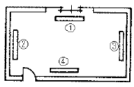
- ①
- ②
- ③
- ④
(정답률: 31%)
75. 변전실 위치중 맞지 않는 것은?
- 건물전체부하의 한쪽 부근
- 지반이 좋고 침수의 염려가 없는 곳
- 습기, 먼지가 적은 곳
- 기기의 반출입이 용이한 곳
(정답률: 53%)
76. 배전 방식 중 일반 사무실이나 학교 등에서 사용되는 것은?
- 220V/110V단상 3선식
- 220V 3상 3선식
- 3상 4선식
- 6kV(3kV) 3상 3선식
(정답률: 17%)
77. 다음 중 빛과 관련된 용어가 아닌 것은?
- dB
- 연색성
- 휘도
- 조도
(정답률: 56%)
78. 복사난방 방식의 특징이 아닌 것은?
- 열용량이 커서 예열시간이 짧다.
- 수직온도분포가 균일하고 실내가 쾌적하다.
- 대류난방에 비하여 설비비가 비싸다.
- 실온을 낮게 유지할 수 있어서 열손실이 적다.
(정답률: 50%)
79. 급탕배관 계통에서 총손실열량이 30,000kcal/h이고 급탕 온도가 80℃, 반탕온도가 70℃라면 순환수량(ℓ /min)은 얼마인가?(오류 신고가 접수된 문제입니다. 반드시 정답과 해설을 확인하시기 바랍니다.)
- 50 (ℓ /min)
- 100 (ℓ /min)
- 1,000 (ℓ /min)
- 3,000 (ℓ /min)
(정답률: 13%)
80. 엘리베이터의 안전장치로서 종점 스위치가 고장났을 때 작동되는 장치는?
- 조속기
- 제한 스위치
- 완충기
- 비상정지장치
(정답률: 37%)
5과목: 건축법규
81. 건축선에 관한 내용으로 옳지 않은 것은?
- 건축물 및 담장은 건축선의 수직면을 넘어서는 아니된다.
- 도로와 접한 부분에 있어서 건축물을 건축할 수 있는 선은 대지와 도로의 경계선으로 한다.
- 소요너비에 미달되는 너비의 도로의 경우에는 그 경계선으로부터 당해 소요너비의 2분의 1에 상당하는 수평거리를 후퇴한 선을 건축선으로 한다.
- 도로면으로부터 높이 4.5미터 이하에 있는 출입구·창문 기타 이와 유사한 구조물은 개폐시에 건축선의 수직면을 넘는 구조로 하여서는 아니된다.
(정답률: 28%)
82. 건축물의 연면적이 10,000m2로서 주차전용건축물에서 주차장 외의 부분을 판매 및 영업시설로 사용하고자 할 때 주차장으로 사용되는 부분의 비율이 최소한 얼마 이상이 되어야 하는가?
- 60%
- 70%
- 80%
- 90%
(정답률: 37%)
83. 국토의 계획 및 이용에 관한 법률의 용도지구의 지정에서 세분되어 있지 않은 지구는?
- 미관지구
- 고도지구
- 위락지구
- 취락지구
(정답률: 39%)
84. 건축물의 존치기간을 정하여 착공 5일전에 시장· 군수·구청장에게 신고하여야 할 가설건축물에 해당되지 않는 것은?
- 전시를 위한 견본주택
- 농업용 고정식 온실
- 공장안에 설치하는 창고용 천막
- 연면적이 15m2인 조립식구조로 된 경비용 가설건축물
(정답률: 20%)
85. 건축면적의 산정방법에 관한 내용으로 옳지 않은 것은?
- 건축면적은 건축물의 외벽의 중심선으로 둘러싸인 부분의 수평투영면적으로 한다.
- 지표면으로부터 1미터 이하에 해당되는 건축물의 부분은 건축면적 산정에서 제외된다.
- 태양열을 주된 에너지원으로 이용하는 주택인 경우 그 건축면적의 산정방법은 건축물의 외벽 중 내측내력 벽의 중심선을 기준으로 한다.
- 건축물의 차양과 부연은 건축물의 건축면적 산정에서 제외된다.
(정답률: 29%)
86. 건축허가신청에 필요한 기본설계도서 중 건축계획서에 포함되어야 할 사항이 아닌 것은?
- 건축물의 용도별 면적
- 건축물의 규모
- 공개공지 및 조경계획
- 주차장 규모
(정답률: 44%)
87. 대지안의 조경면적에서 옥상조경기준에 관한 내용으로 옳은 것은?
- 옥상조경면적의 2/3를 인정하되 전체조경면적의 60/100을 초과할 수 없다.
- 옥상조경면적의 1/2를 인정하되 전체조경면적의 50/100을 초과할 수 없다.
- 옥상조경면적의 2/3를 인정하되 전체조경면적의 50/100을 초과할 수 없다.
- 옥상조경면적의 1/3를 인정하되 전체조경면적의 50/100을 초과할 수 없다.
(정답률: 47%)
88. 국토의 계획 및 이용에 관한 법률상 기반시설로 볼 수 없는 것은?
- 운동장
- 보건위생시설
- 주차장
- 주거시설
(정답률: 31%)
89. 시가화조정구역에 대한 설명으로 옳지 않은 것은?
- 도시지역의 무질서한 시가화를 방지하기 위하여 지정
- 도시지역의 계획적· 단계적인 개발을 도모하기 위하여 지정
- 보안상 필요에 의하여 도시개발을 제한하기 위하여 지정
- 5년 이상 20년 이내의 기간동안 시가화를 유보할 필요가 있다고 인정될 때 지정
(정답률: 42%)
90. 자동차용 승강기로 운반된 자동차가 주차구획까지 자주식으로 들어가는 노외주차장의 경우에 자동차용 승강기는 주차대수 몇 대당 1대를 설치하는가?
- 10대
- 15대
- 20대
- 30대
(정답률: 29%)
91. 특별피난계단 및 비상용승강기의 승강장에 설치하는 배연 설비의 구조기준으로 적합하지 않은 것은?
- 배연구 및 배연풍도는 불연재료로 하고, 화재가 발생한 경우 원활하게 배연시킬 수 있는 규모로서 외기 또는 평상시에 사용하지 아니하는 굴뚝에 연결할 것
- 배연구가 외기에 접하지 아니하는 경우에는 배연기를 설치할 것
- 배연기는 배연구의 열림에 따라 자동적으로 작동하고, 충분한 공기배출 또는 가압능력이 있을 것
- 배연구는 평상시에 열린 상태를 유지하고, 닫힌 경우에는 배연에 의한 기류로 인하여 열리지 아니하도록 할 것
(정답률: 40%)
92. 건축법상 건축물의 용도변경시 분류된 시설군이 아닌것은?
- 영업 및 판매시설군
- 문화 및 집회시설군
- 공업시설군
- 주거 및 업무시설군
(정답률: 36%)
93. 지구단위계획구역의 내용 중 제1종지구단위계획의 지정 목적 달성에 필요한 사항이 아닌 것은?
- 건축물의 용도제한
- 건축물의 건폐율 및 용적률
- 대지와 도로와의 관계
- 건축물 높이의 최고한도 및 최저한도
(정답률: 38%)
94. 도심지 공개공지 등을 확보하여야 하는 지역과 건축물에 대한 내용 중 틀린 것은?
- 준공업지역
- 일반주거지역, 준주거지역
- 시장· 군수· 구청장이 도시화의 가능성이 크다고 인정하여 지정· 공고하는 지역
- 연면적의 합계가 3,000m2 이상인 문화 및 집회시설
(정답률: 22%)
95. 도시기본계획에 포함되어야할 정책방향이 아닌 것은?
- 공원· 녹지에 관한 사항
- 환경의 보전 및 관리에 관한 사항
- 경관에 관한 사항
- 공동구의 설치에 관한 사항
(정답률: 39%)
96. 노상주차장의 구조· 설비기준에 관한 내용으로 옳은 것은?
- 종단구배가 4%를 초과하는 도로에 설치하여서는 아니된다. 다만, 종단구배가 6% 이하의 도로로서 보도와 차도의 구별이 되어 있고, 그 차도의 너비가 13m 이상인 경우에는 그러하지 아니하다.
- 종단구배가 4%를 초과하는 도로에 설치하여서는 아니된다. 다만, 종단구배가 4% 이하의 도로로서 보도와 차도의 구별이 되어 있고, 그 차도의 너비가 13m 이상인 경우에는 그러하지 아니하다.
- 종단구배가 6%를 초과하는 도로에 설치하여서는 아니된다. 다만, 종단구배가 6% 이하의 도로로서 보도와 차도의 구별이 되어 있고, 그 차도의 너비가 13m 이상인 경우에는 그러하지 아니하다.
- 종단구배가 6%를 초과하는 도로에 설치하여서는 아니된다. 다만, 종단구배가 4% 이하의 도로로서 보도와 차도의 구별이 되어 있고, 그 차도의 너비가 13m 이상인 경우에는 그러하지 아니하다.
(정답률: 39%)
97. 구조의 안전과 지진의 안전을 함께 확인하지 아니할 수 있는 건축물은?
- 층수가 6층인 건축물
- 연면적이 1만제곱미터인 건축물
- 국가적 문화유산으로 보존가치가 있는 박물관으로서 연면적의 합계가 500제곱미터인 것
- 건설교통부령이 정하는 지진구역 안의 건축물
(정답률: 25%)
98. 건축물의 높이· 층수 등의 산정방법에 관한 기준으로 옳지 않은 것은?
- 난간벽의 2분의 1 이상이 공간으로 되어 있는 것은 당해 건축물의 높이에 산입하지 아니한다.
- 처마높이는 지표면으로부터 건축물의 지붕틀 또는 이와 유사한 수평재를 지지하는 벽· 깔도리 또는 기둥의 상단까지의 높이로 한다.
- 층고는 방의 바닥구조체 중간으로부터 위층 바닥구조체의 중간까지의 높이로 한다.
- 층의 구분이 명확하지 아니한 건축물은 당해 건축물의 높이 4m마다 하나의 층으로 산정한다.
(정답률: 36%)
99. 중형 기계식주차장에 주차할 수 있는 자동차의 최대 무게는?
- 1,300 kg
- 1,600 kg
- 1,900 kg
- 2,200 kg
(정답률: 31%)
100. 건축관계 공사의 관계 기술자와의 의무적 협력관계가 틀린 것은?
- 연면적 10,000m2의 중앙공급식 아파트 난방공사 - 건축기계설비기술사
- 깊이 9m의 토지굴착공사 - 토목분야 기술자격취득자
- 높이 6m의 옹벽공사 - 토목분야 기술자격취득자
- 연면적 10,000m2의 사무소 급배수 공사 - 공조냉동 기계기술사
(정답률: 20%)
복도가 없는 층은 통풍 및 채광이 나쁘다는 이유는, 복층형 아파트는 일반적으로 천장이 높아서 윗층에서 아래층으로 공기가 잘 순환하지 않고, 아래층에서 윗층으로 채광이 잘 되지 않기 때문입니다. 따라서 복도가 없는 층은 통풍 및 채광이 나쁘다는 것이 맞습니다.
그리고 엘리베이터의 정지층수를 적게 할 수 있고, 통로면적을 감소하고 임대면적을 증가시킬 수 있다는 것은 복층형 아파트의 장점 중 하나입니다.